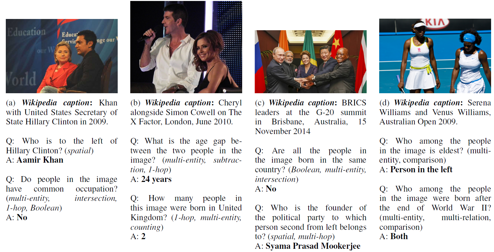

Visual Question Answering (VQA) has emerged as an important problem spanning Computer Vision, Natural Language Processing and Artificial Intelligence (AI). In conventional VQA, one may ask questions about an image which can be answered purely based on its content. For example, given an image with people in it, a typical VQA question may inquire about the number of people in the image. More recently, there is growing interest in answering questions which require commonsense knowledge involving common nouns (e.g., cats, dogs, microphones) present in the image. In spite of this progress, the important problem of answering questions requiring world knowledge about named entities (e.g., Barack Obama, White House, United Nations) in the image has not been addressed in prior research. We address this gap in this paper, and introduce KVQA – the first dataset for the task of (world) knowledge-aware VQA. KVQA consists of 183K question-answer pairs involving more than 18K named entities and 24K images. Questions in this dataset require multi-entity, multi-relation, and multi-hop reasoning over large Knowledge Graphs (KG) to arrive at an answer. To the best of our knowledge, KVQA is the largest dataset for exploring VQA over KG. Further, we also provide baseline performances using state-of-the-art methods on KVQA.
|  |
KVQA1.0 - dataset images (XX GB)
KVQA1.0 - reference images (XX GB)
KVQA1.0 - Other supporting files (XX GB)
README
Updates
If you use this dataset, please cite:
@InProceedings{shahMYP18,
author = "Shah, S., Mishra, A., Yadati, N. and Talukdar, P.~P.",
title = "KVQA: Knowledge-Aware Visual Question Answering",
booktitle = "AAAI",
year = "2019",
}
Authors would like to thank MHRD, Govt. of India and Intel Corporation for partly supporting this work.